RTR: Imperium Surrectum
RTR: Imperium SurrectumThe unique buildings of 0.2.0
2021-10-29 · Tarnholm
I bet none saw this one coming, a new Dev Diary merely a day after the last one! And yet, here it is.
Today I'm proud to show you all the Unique buildings we are adding to RIS 0.2.0. It's plenty to read so I'm going to leave you all to it.
Temple of Jupiter Optimus Maximus was the great temple on the Capitoline Hill in ancient Rome. It was considered one of the largest and the most beautiful temples in the city and was probably founded on an earlier Etruscan temple of Veiovis. The Temple of Jupiter was dedicated on September 13 in the first year of the Roman Republic, c. 509 BC. It was sacred to the Capitoline Triad consisting of Jupiter and his companion deities, Juno and Minerva. Lucius Tarquinius Priscus vowed to build this temple while battling with the Sabines, and seems to have laid some of its foundations; a large part of the work, however, was done by Lucius Tarquinius Superbus, who is said to have nearly completed it. Tradition also had it that prior to the temple's construction shrines to other gods occupied the site. When the augurs carried out the rites seeking permission to remove them, only Terminus and Iuventas were believed to have refused. Their shrines were therefore incorporated into the new structure. As the god of boundaries, Terminus' refusal to be moved was interpreted as a favorable omen for the future of the Roman state. The man to perform the dedication of the temple was chosen by lot. The duty fell to Marcus Horatius Pulvillus, one of the consuls in that year. The original Temple measured almost 60 metres x 60 metres and was considered the most important religious temple of the whole state of Rome. Each deity of the Triad had a separate cella, with Juno Regina on the left, Minerva on the right, and Jupiter Optimus Maximus in the middle. The temple was decorated with many terra cotta sculptures. The most famous of these was of Jupiter driving a quadriga, a chariot drawn by four horses, which was placed at the peak of the pediment. This sculpture, as well as the cult statue of Jupiter in the main cella, was said to have been the work of Etruscan artisan Vulca of Veii. This building complex can be improved as the settlement grows in size and importance.
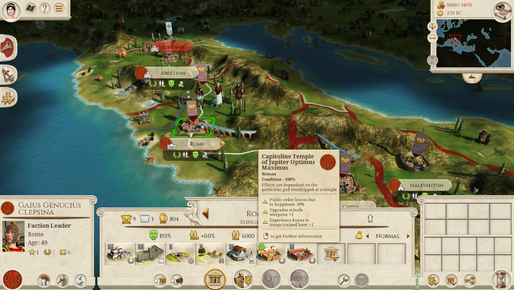
There are more than hundreds stone rings exist in the Britannia. Stonehenge is the most prominent due to its shape is roughly circular. It is difficult to precisely date the stone rings because of the scarcity of datable remains associated with them, but it is known that they were constructed during the Neolithic period. In southern Britannia the Neolithic period dates from the development of the first farming communities around 4000 BC to the development of bronze technology around 2000 BC, when the construction of the megalithic monuments was mostly over. These mean Stonehenge even stand before the coming of the Celts in Britannia. How did Stonehenge build remain mystery since its huge stones are from far away corner of the Isle. Although the Britons regarded Stonehenge as a sacred place, many other civilisations regard it as astronomical observatory for agriculture. But everyone accepts that we don't really know anything about this mysterious stone circle. Although the British know very little about Stonehenge, it is the pride of Briton. This building complex can be improved as the settlement grows in size and importance.
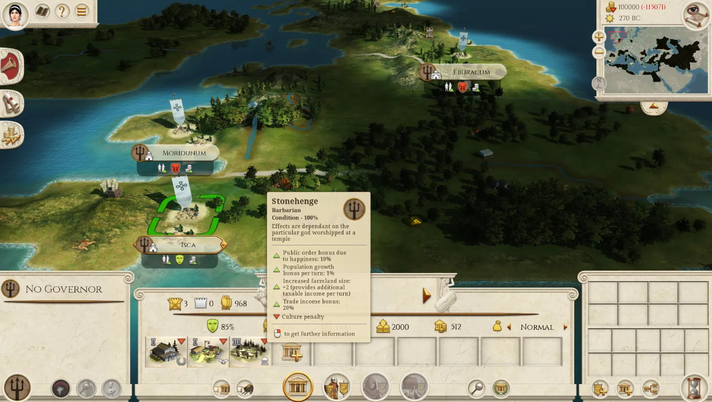
Delphi was the site of the Delphic oracle, whose priestess was known as the Pythia, and it was a major site for the worship of the god Apollo. The exterior of his temple was decorated with shields captured from the Persians at Plataea. His sacred precinct in Delphi was a Pan-Hellenic sanctuary, where every four years athletes from all over the Greek world competed in the Pythian Games. Apollo spoke through his oracle, who had to be an older woman of blameless life chosen from among the peasants of the area. This building complex can be improved as the settlement grows in size and importance.
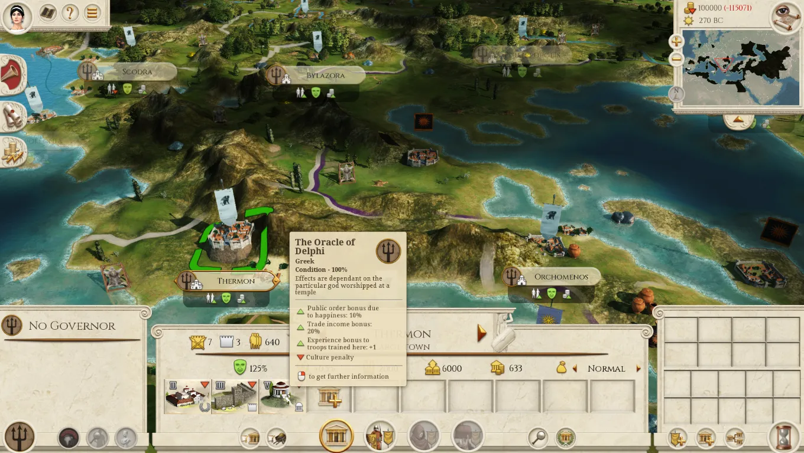
Dodona in Epirus, was a prehistoric oracle devoted to the Greek god Zeus and to the Mother Goddess identified at other sites with Rhea or Gaia, but here called Dione. She was described as "the temple associate" of Zeus at Dodona. The three old prophetesses of the shrine, known collectively as the Peleiades, were her priestesses. In the sacred grove they interpreted the rustling of the oak leaves to determine the correct actions to be taken. This building complex can be improved as the settlement grows in size and importance.
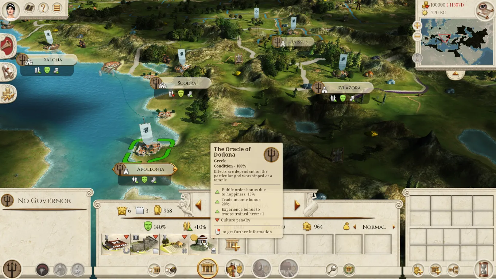
Lying south-west of Epidauros, in the middle of the Argolid peninsula, the Sanctuary of Asklepios comprises 160 sq km in the verdant valley enclosed by Mts. Koryphaion and Kynortion and by Mt. Arachne together with the lower peak of Titthion, which lies in front of it. Here in archaic times the god or hero Malos or Maleatas was worshiped. This cult's evident relation to Apollo's allowed a very early merging of the two. In historic times, Apollo, already the dominant god in the precinct, took on the surname Maleatas. Asklepios, the mythical hero-doctor, son of Apollo and Korone, learned medicine from the centaur Chiron. It is not known when the worship of Malos was superseded by that of Apollo and Asklepios. In the last quarter of the 5th c. B.C., the cult of Asklepios enjoyed a sudden upsurge in Epidauros, to reach its peak in the 4th c. B.C. The Pan-Hellenic Games and horse races, the Asklepieia, which were traditionally held every four years, so that more than 200 new Asklepieia were built, all under the patronage of the sanctuary in Epidauros. In the 4th c. B.C., the Hellenistic world, under the influence of radical internal and external changes now clung with especial fervor to this new philanthropic god, a healing doctor and savior. The manifest reverence towards the god resulted in the metamorphosis of the sanctuary's enclosure, which had been unadorned up to the 5th c. B.C., into a place filled with countless offerings and monuments, most of them remarkable examples of 4th c. B.C. Greek art. The prosperity of the sanctuary continued through the Hellenistic period. Treasures and choice works of art were ceaselessly heaped up in it. Ancient literary sources and relevant inscriptions found in the sanctuary give a great deal of information about the cures. Therapy was based on the belief that, since an individual's sickness had a psychosomatic origin, the power to restore health was likewise to be sought within him. The therapy of the doctor-priests, therefore, aimed at the rousing and augmentation of an inner power of restoring health, which was, in fact, the harmony of soul and body. This type of therapy was also practiced by the Pythagoreans, whose founder was held to be the son of Apollo. Although this therapy often led to superstition, it nevertheless presented a basis for scientific medicine and proved the importance of psychosomatic factors in the control of health. Consequently, in the Hellenistic and Roman periods, although the practice of medicine was generally taken away from religious control, doctors traced their lineage and inspiration to Asklepios, and called themselves his descendants. This building complex can be improved as the settlement grows in size and importance.
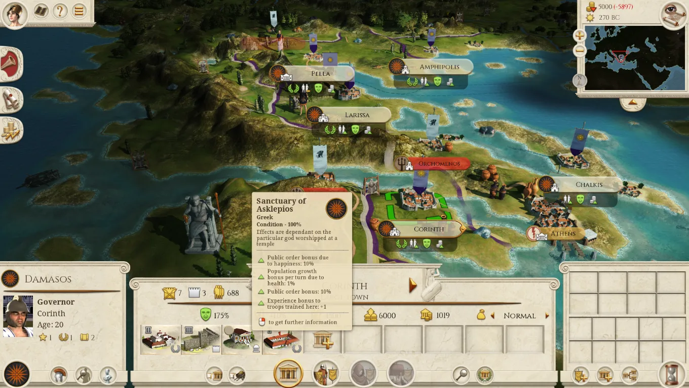
The standing stones of Karahunj (also called Zorats Karer, the most likely translation for which is 'Singing Stones') are situated 200 km south-east of Armavir. It was a temple that consists of 40 stones built in honor of the Armenians' main God, Ari, meaning the Sun, is situated in the central part of Carahunge. Besides the temple, it had a large and developed observatory, and also a university that made up the temple's wings. The structure surrounds a Bronze Age cemetery set on the natural elevation. The site was in use from the Middle Bronze Age into the Iron Age (2nd to 1st millennia BC), and contains some extraordinary chamber tombs. A wall of rocks and loam was built, of which only the vertical rocks remain standing. In the Hellenistic and Roman period, the site was probably used as a fortified place of refuge. It is believed to date back to 7500 BC. Petroglyphs found nearby indicate that early inhabitants of the region had an awareness of the night sky long before the II millennium BC. Karahunj has many legends associated with it. This building complex can be improved as the settlement grows in size and importance.
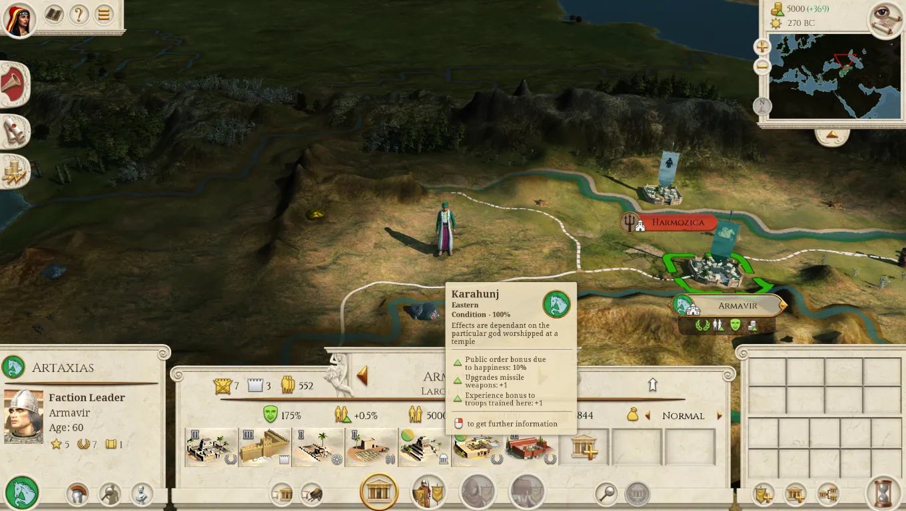
Anahita was an ancient Iranian cosmological figure venerated as the female guardian angel of waters (Ābān), associated with fertility, healing and wisdom. She was associated with the planet Venus and identified with Isthar, the Mesopotamian goddess of love and war. An iconic shrine cult of Aredvi Sura Anahita was introduced in the late Achaemenid times, and her temple at Ecbatana in Media was one of the most glorious sanctuaries in the known world. In the Hellenistic period Anahita was mentioned as the Immaculate Virgin Mother of the Lord Mithra, and called sometimes as the Persian Artemis. This building complex can be improved as the settlement grows in size and importance.
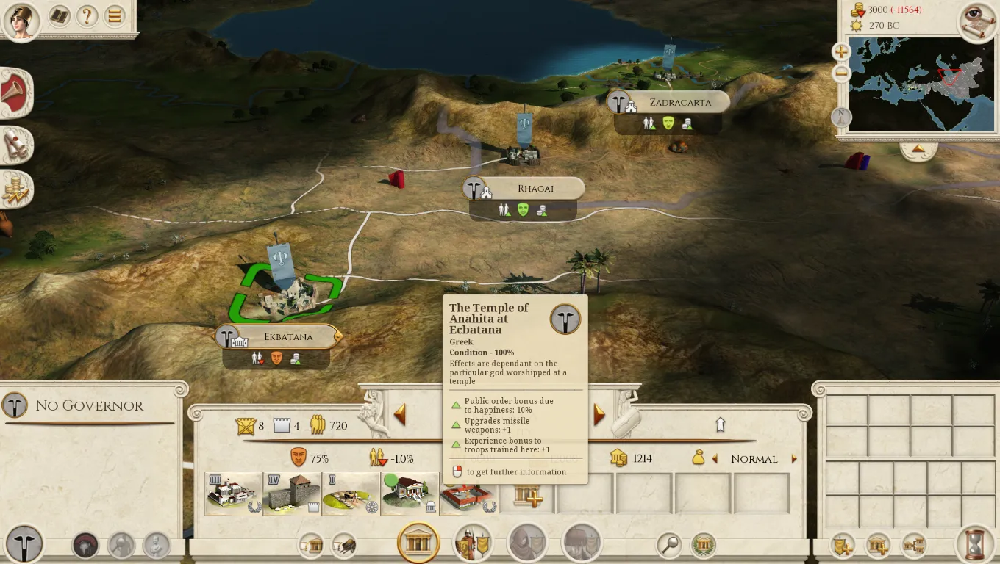
The mythical "secret place" of the Gods and of the High Priesthood, the sancto sanctorum of the Dacians, was the Kogaionon (Kogaion) Mountain. Kogaionon was the semi-mythical holy mountain of the Dacians, the place where Zalmoxis, a legendary social and religious reformer, regarded as the only true god by the Thracian Dacians, stayed in an underground cave for three years. Strabo claims that a river with the same name flowed in the vicinity. The translation of Kogaionon is "sacred mountain", which would be connected to a probable Dacian word kaga meaning "sacred". The Kogaionon Mountain believed to be in area of the Orastie Mountains, also called the Sureanu Mountains, which was the economical, the political and the spiritual center of Dacia as residence of the king, the high priest and the supreme judge. This building complex can be improved as the settlement grows in size and importance.
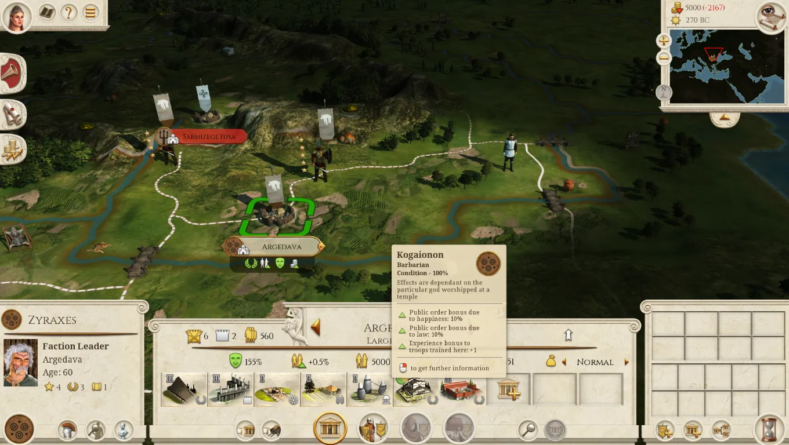
Persepolis was once the great capital of the Persian Empire under the Achaemenid dynasty, but now it is a mere shadow of its glorious past. The first capital of the Achaemenid Empire during the rule of Cyrus the Great and his successor Cambyses II was Pasargadae until Darius the Great founded another one in Persepolis. The wealth of Persia was to be visible in every aspect of its construction. Darius the Great was responsible for the greatest and most glorious palace at Persepolis that was named Apadana and it was used for the King of Kings' official audiences. The work began in 515 BCE and was completed 30 years later, by his son Xerxes I. Next to the Apadana, second largest building of the Terrace and the final edifices was the Throne Hall or the Imperial Army's hall of honour (also called the "Hundred-Columns Palace"). This hall was started by Xerxes and completed by his son Artaxerxes I. As a residence, however, for the rulers of the empire, a remote place in a difficult alpine region was far from convenient, and the real capitals were Susa, Babylon and Ecbatana. After Alexander the Great invaded Persia, he sent the main force of his army to Persepolis in the year 330 BCE and stormed the Persian Gates in the Zagros Mountains, then quickly captured Persepolis before its treasury could be looted. After several months Alexander allowed his troops to loot Persepolis. A fire broke out in the eastern palace of Xerxes and spread to the rest of the city. It is not clear if it had been a drunken accident, or a deliberate act of revenge for the burning of the Acropolis of Athens during the Second Hellenic-Persian War. Although many historians argue that while Alexander's army were celebrating with a symposium they decided to take revenge against Persians in which case it would be a combination of the two. The city must have gradually declined in the course of time; but the ruins of the Achaemenidae remained as a witness to its ancient glory. It is probable that the principal town of the country, or at least of the district, was always in this neighbourhood. There the foundations of the second great Persian Empire were later laid, and Istakhr acquired special importance as the centre of priestly wisdom. The restoration of Persepolis as a goodwill gesture increases the loyalty of noble Persians, and this will be again a worthy place for a real Shāhanshāh, the King of the Kings.
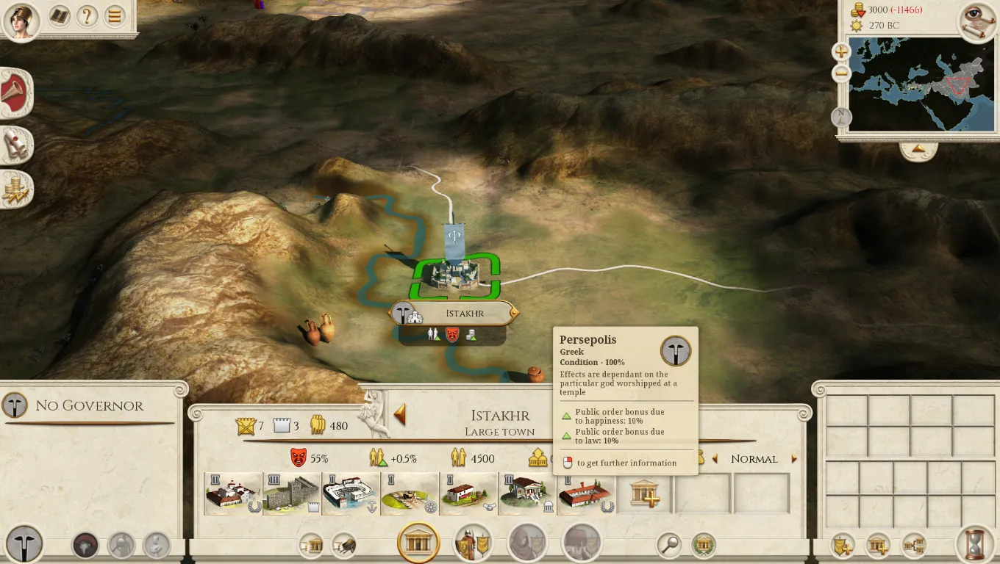
Over 6 kilometres west and beyond the suburb, Heraclea, lay the paradise of Daphne, a park of woods and waters, in the midst of which rose a great temple to the Pythian Apollo, founded by Seleucus I Nicator, and enriched with a cult-statue of the god, as Musagetes, "the Leader of the Muses". The beauty and the lax morals of Daphne were celebrated all over the western world; and indeed Antioch on the Orontes as a whole shared in both these titles to fame. Antioch became the capital and court-city of the western Seleucid Empire under Antiochus I Soter, its counterpart in the east being Seleucia on the Tigris. This building complex can be improved as the settlement grows in size and importance.
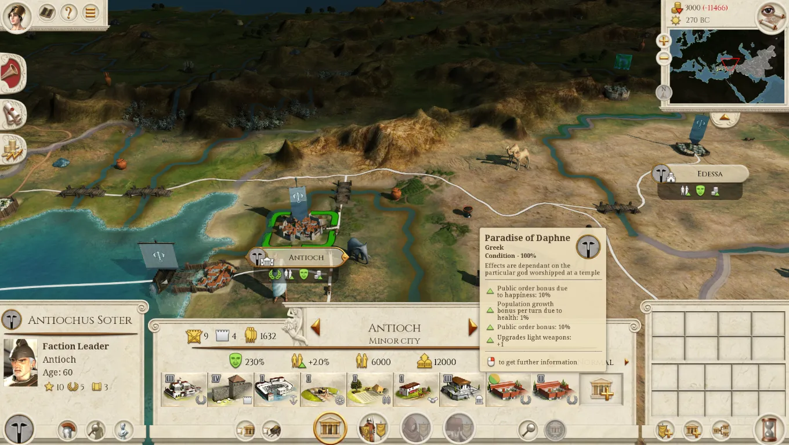
When Herakles had to perform his twelve labours, one of them was to fetch the Cattle of Geryon in Spain and bring it to Eurystheus. On his way to the island of Erytheia he had to cross the mountain that was once Atlas. Instead of climbing the great mountain, he cut corners and put his mind to work. He decided to use his great strength to smash through the colossal mountain that used to be a colossal giant. Herakles split it in half using his indestructible club. By doing so, he connected the Atlantic Ocean to the Mediterranean Sea and formed the Strait with mountains on both side. These mountains taken together have since then been known as the Pillars of Herakles, which are also mentioned at some places as portals, or gates, to different locations on Earth. Near Gadir was the westernmost temple of Tyrian Herakles (Melqart), near the eastern shore of the island. Strabo notes that the two bronze pillars within the temple, each 8 cubits high, were widely proclaimed to be the true Pillars of Heracles by many who had visited the place and had sacrificed to Herakles there. But Strabo believes the account to be fraudulent, in part noting that the inscriptions on those pillars mentioned nothing about Herakles, speaking only of the expenses incurred by the Phoenicians in their making. The columns of the Melqart temple at Tyre were also of religious significance. This building complex can be improved as the settlement grows in size and importance.
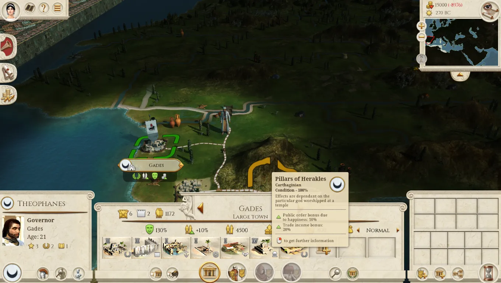
The Second Temple was the reconstructed Solomon's Temple in Jerusalem, and it was the centre of Jewish worship, which focused on the sacrifices known as the korbanot. The First Temple was destroyed when the Jews were exiled into Babylonian Captivity, and construction of the Second Temple was completed during the reign of Darius the Great, seventy years after the destruction of the First Temple. The Temple at Jerusalem, thought of as great house of the God of Israel, was a key part of the history of Israel, and a major theme in the storyline of the Hebrew Bible. This building complex can be improved as the settlement grows in size and importance.
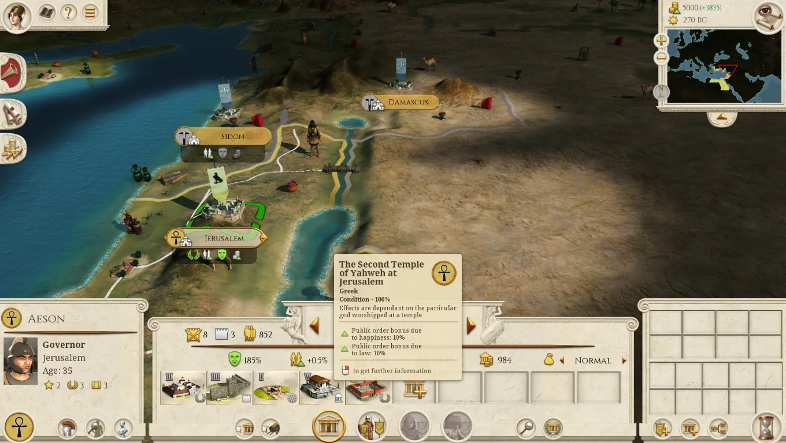
The chief deity of Carthage was Baal Hammon, the community's divine lord and protector, who was identified by the Greeks with Kronos and by the Romans with Saturn. Tanit was the consort of Baal Hammon (or Amon), "Lord of the Incense Altar," and she was often given the attribute "face of Baal." The Carthage Tophet was a sacred sanctuary where people came to make vows and address requests to Baal Hammon and his consort Tanit, according to the formula do ut des ("I give in order that you give"). Each vow was accompanied by an offering. The Carthaginian temples were often built raised or walled off in a separate precinct or acropolis. Since the temple was the "house" of the particular god or goddess, it was also the storehouse for the treasures belonging to the deity, so it was built sturdy to protect them. The temple staff would include priests, musicians, singers, diviners, scribes and sometimes armed guards, as well as other specialists, depending on the size and function of the temple. The temple staff was sustained in part by the proceeds of sacrifices, by supplies from the estates belonging to the temple, and in part by direct contributions from the local people. The essential religious function was the care of the statue of the god or goddess, offering sacrifices and performing the necessary rituals for the good of the people and the state. The temple staff probably had a leading role in the society and everyday life of the state. Punic children who died young possessed a special status. They were accordingly incinerated and buried inside an enclosure reserved for the cult of lord Baal Hammon and lady Tanit. These children were not "dead" in the usual sense of the word; rather, they were retroceded. For mysterious reasons, Baal Hammon decided to recall them to himself. Submitting to divine will, the parents returned the child, giving it back to the god according to a ritual that involved, among other things, incineration and burial. In return, the parents hoped that Baal Hammon and Tanit would provide a replacement for the retroceded child and this request was inscribed on a funeral stele. Thus the Tophet burials were not true offerings of children to the gods. Rather, they were restitutions of children or foetuses taken prematurely, by natural death. In many cases, the Carthaginians used lambs or kid goats as replacement sacrifice and in some cases perhaps even dead children. This building complex can be improved as the settlement grows in size and importance.
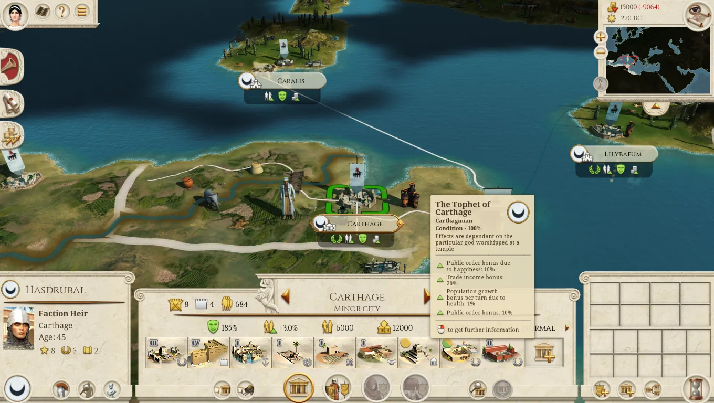
The Royal Library of Alexandria, the largest library of the ancient world, was built during the reign of Ptolemy II of Egypt. The Library was likely created after his father had built what would become the first part of the Library complex, the temple of the Muses - the Mouseion, the home of music or poetry, a philosophical school and library like Plato's school of philosophy, also a gallery of sacred texts. The Latin word museum is derived from this. Initially the Library was closely linked to a "museum," or research center, that seems to have focused primarily on editing texts. Libraries were important for textual research in the ancient world, since the same text often existed in several different versions of varying quality and veracity. The editors at the Library of Alexandria are especially well known for their work on Homeric texts. All visitors to Alexandria were required to surrender all books, scrolls as well as any form of written media in their possession which were listed under the heading "books of the ships"; these writings were then swiftly copied by official scribes. Sometimes the copies were so precise that the originals were put into the Library, and the copies were delivered to the unsuspecting previous owners. This building complex can be improved as the settlement grows in size and importance.
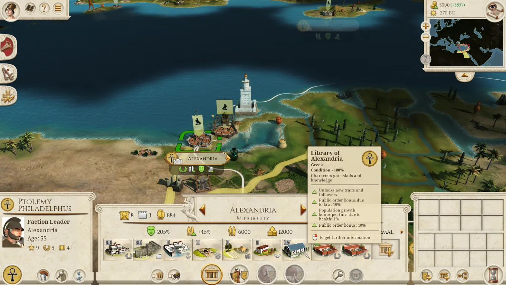
Pergamum was home to a library said to house approximately 200,000 volumes, according to the writings of Plutarch. Built by Eumenes II and situated at the northern end of the Acropolis, it became one of the most important ancient libraries. Historical accounts claim that the library possessed a large main reading room, lined with many shelves. An empty space was left between the outer walls and the shelves to allow for air circulation. This was intended to prevent the library from becoming overly humid in the warm climate of Anatolia and can be seen as an early attempt at library preservation. Manuscripts were written on parchment, rolled, and then stored on these shelves. A statue of Athena, the goddess of wisdom, stood in the main reading room. Pergamum is credited with being the home and namesake of parchment (charta pergamena). Prior to the creation of parchment, manuscripts were transcribed on papyrus, which was produced only in Alexandria. When the Ptolemies of Egypt refused to export any more papyrus to Pergamum, King Eumenes II commanded that an alternative source be found. This led to the production of parchment, which is made out of a thin sheet of sheep or goat skin. Parchment reduced the Roman Empire's dependency on Egyptian papyrus and allowed for the increased dissemination of knowledge throughout Europe and Asia. The introduction of parchment also greatly expanded the holdings of the Library of Pergamum. This building complex can be improved as the settlement grows in size and importance.
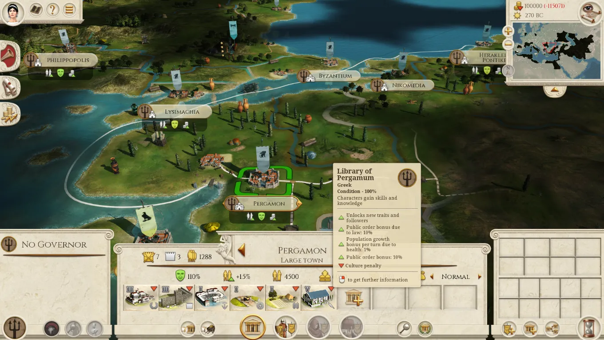
The Academy was founded by Plato in ca. 385 BC in Athens. It persisted throughout the Hellenistic period as a sceptical school. The site of the Academy was located near Colonus. The walk from Athens to the Academy was 6 stadia (1 mile) from the Dipylon gates. Before the Academy was a school, and even before Cimon enclosed its precincts with a wall, it contained a sacred grove of olive trees dedicated to Athena, the goddess of wisdom, outside the city walls of ancient Athens. The archaic name for the site was Hekademia, which by classical times evolved into Academy and was explained, at least as early as the beginning of the 6th century BC, by linking it to an Athenian hero, a legendary "Akademos". The site of the Academy was sacred to Athena and other immortals. At the time of Plato, the academy was a beautiful park for gymnastics from sixth century BC. As few retreats could be more favorable to philosophy and the Muses. Within this small park Plato possessed, as part of his patrimony, he opened a school for the reception of those inclined to attend his instructions. The Academy was not a school in which an orthodox metaphysical doctrine was taught, or an association of members who were expected to subscribe to the theory of ideas. The metaphysical theories of the director were not official and the formal instruction in the Academy was restricted to mathematics. Plato's influence on these men and later Academy, then, was that of an intelligent critic of method, not that of a technical mathematician with the skill to make great discoveries of his own, and it was by his criticism of method, by his formulation of the broader problems to which the mathematician should address himself, and by arousing in those who took up philosophy an interest in mathematics that he gave a great impulse to the development of the science. It appears that the Head of the Academy was elected for life by a majority vote. The first few to lead the Academy were: Plato, Speuisppus, Xenocrates, Polemon, Crates and Crantor. Aristotle was a member of the Academy for many years but never became its Head. This building complex can be improved as the settlement grows in size and importance.
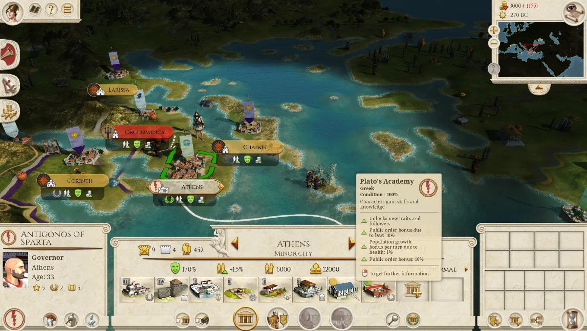
That's all from us this week. Truly this time. 😛